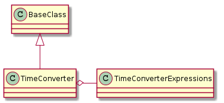
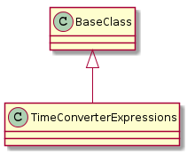

A place for a time-converter.
class TimeConversions(object):
"""
A class in hold the multiplers for conversion
"""
__slots__ = ()
same = 1
seconds_per_minute = 60
seconds_per_hour = seconds_per_minute * 60
seconds_per_day = seconds_per_hour * 24
# end class TimeConversions
class TimeUnits(object):
"""
An enumerator of sorts for time-units
"""
days = "d"
hours = "h"
minutes = "m"
seconds = "s"
# end class TimeUnits

| TimeConverter([units]) | The Time Converter converts times | ||
| TimeConverter.expressions |
|
||
| TimeConverter.converter |
|
||
| TimeConverter.__call__(source) |
|

| TimeConverterExpressions([source]) | A class to hold the regular expressions for the TimeConverter | ||
| TimeConverterExpressions.float | This requires a value after the decimal point: | ||
| TimeConverterExpressions.integer |
|
||
| TimeConverterExpressions.units(prefix) |
|
||
| TimeConverterExpressions.unitless |
|
||
| TimeConverterExpressions.seconds |
|
||
| TimeConverterExpressions.minutes |
|
||
| TimeConverterExpressions.hours |
|
||
| TimeConverterExpressions.days |
|
||
| TimeConverterExpressions.times |
|
||
| TimeConverterExpressions.enums |
|
||
| TimeConverterExpressions.tokens(source) | Tokenizes a source stream based on times property. | ||
| TimeConverterExpressions.__iter__() |
|
class TimeConverterEnums(object):
"""
A class to hold some constants
"""
__slots__ = ()
integer = "integer"
float = "float"
time = "time"
units = 'units'
# end class TimeConverterEnums